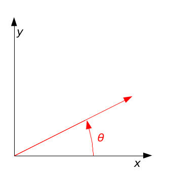

Introduction to Ag Informatics
Module 6, Lecture 2Joe Dvorak, joe.dvorak@uky.edu
Fall 2021
Outline for Today
- How geometric processing is accomplished
- Types of geometric operations
- Examples working with geometric operations
Translating Points
x_new = x_offset + x_old
y_new = y_offset + y_old
Using Matrix Math/Linear Algebra, we can represent this as:
Wikipedia, WP:CC BY-SA/p>
Translating Points
Because of this, a matrix of this form is called a Translation Matrix
Translation Matrix:
Wikipedia, WP:CC BY-SA/p>
Point Representation
For this to work, the point is represented by a column vector.
This will keep showing up!
Wikipedia, WP:CC BY-SA/p>
Rotating a Point Around the Origin (0,0)
Let's rotate a point (or vector) around the origin.
This is the set of equations to calculate the new point.
Rotating a Point Around the Origin (0,0)
These equations
can also be represented in matrix form as
Rotating a Point Around the Origin (0,0)
The "transformation matrix" in this set of equations
is known as the Rotation Matrix
Homogeneous Coordinates
We can combine rotation and translation using homogeneous coordinates.
We add "1" to the bottom of the column vector. "0" is added below the rotation and a "1" is below the translation
Other Affine Transformations
Challenges of Computing
Difficult procedures:
- Area for complex shapes
- Splitting shapes
- Combining shapes
- Determing distances between complex shapes
- Calculating overlapping regions
Examples in Spyder
Let's try some of these geometric processes!
Homework
We will work with Shapely this week! To be released after class.
- The quiz for module 6 will be posted soon.
Questions?
License
- Attribution Recommendation: Introduction to Agricultural Informatics Course", Joe Dvorak, University of Kentucky. Available at https://github.com/ag-informatics/ag-informatics-course. Licensed by CC BY-NC-SA 4.0.

This course is licensed under a Creative Commons Attribution-NonCommercial-ShareAlike 4.0 International (CC BY-NC-SA 4.0) license. This is a human-readable summary of (and not a substitute for) the license. Official translations of this license are available in other languages.
You are free to:
- Share — copy and redistribute the material in any medium or format
- Adapt — remix, transform, and build upon the material
Under the following terms:
- Attribution — You must give appropriate credit, provide a link to the license, and indicate if changes were made. You may do so in any reasonable manner, but not in any way that suggests the licensor endorses you or your use.
- NonCommercial — You may not use the material for commercial purposes.
- ShareAlike — If you remix, transform, or build upon the material, you must distribute your contributions under the same license as the original.
- No additional restrictions — You may not apply legal terms or technological measures that legally restrict others from doing anything the license permits.